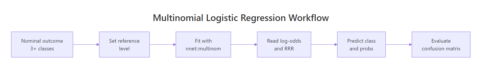

Multinomial Logistic Regression in R: nnet::multinom() Step-by-Step
Multinomial logistic regression models an outcome with three or more unordered categories, like predicting a flower species or a customer's choice among three plans. The multinom() function in the nnet package fits this model in one call and returns coefficients you interpret against a reference category.
How do you fit multinomial logistic regression in R?
The fastest path to a working multinomial model in R is nnet::multinom(). It takes a formula where the left side is a factor with three or more levels and the right side is any mix of numeric or categorical predictors. Let us fit one on the classic iris dataset and read the output before unpacking what each piece means.
We load the nnet package, split iris into a 70/30 train/test set, and fit a model predicting Species from two sepal measurements.
The summary shows two coefficient rows, one for each non-reference class. R picked setosa as the reference automatically (alphabetical order of the factor levels), so the versicolor row describes how Sepal.Length and Sepal.Width shift the log-odds of being versicolor instead of setosa. The virginica row does the same for virginica versus setosa. Residual Deviance and AIC let you compare nested models; lower is better.
multinom() prints one line per optimization iteration by default. Turn it off when the iteration trace is not the focus so the console stays readable.Try it: Refit the model with Petal.Length added as a third predictor and print the summary. Does AIC drop?
Click to reveal solution
Explanation: Petal.Length separates the three species strongly, so AIC drops sharply. The coefficient matrix now has four columns: intercept, Sepal.Length, Sepal.Width, Petal.Length.
How do you set the reference category?
The reference category is the class every other class gets compared against. By default R uses the first factor level alphabetically, but this is rarely what you want. Switch it with relevel() so your coefficients tell the story you actually want to tell.
Here we move the reference from setosa to versicolor and refit the same model.
The rows have flipped: now we see setosa versus versicolor and virginica versus versicolor. Notice the setosa row is the negation of the original versicolor row, exactly as expected when you swap reference and comparison classes. The virginica coefficients describe how predictors shift virginica-versus-versicolor odds, which was not directly visible in the default setup.
Try it: Set virginica as the reference and print just the coefficient matrix. Which class does each row now describe?
Click to reveal solution
Explanation: Each row now describes that class versus virginica. The setosa row is the negation of the original virginica-versus-setosa row (signs flip, same magnitudes).
How do you interpret multinom() coefficients?
Multinomial logistic regression generalises binary logistic regression. For a binary outcome, the model gives one log-odds equation. For K classes, it gives K-1 equations, each comparing one class to the reference through the softmax transformation.
The probability of class $k$ given predictors $\mathbf{x}$ is:
$$P(Y = k \mid \mathbf{x}) = \frac{\exp(\mathbf{x}^\top \boldsymbol{\beta}_k)}{1 + \sum_{j=1}^{K-1} \exp(\mathbf{x}^\top \boldsymbol{\beta}_j)}$$
Where:
- $K$ = total number of classes in the outcome
- $\boldsymbol{\beta}_k$ = coefficient vector for class $k$ (zero by construction for the reference class)
- $\mathbf{x}$ = predictor vector (including the intercept term)
- The denominator normalises so probabilities across classes sum to 1
The raw coefficient $\beta_{k,j}$ is the expected change in the log-odds of class $k$ versus the reference class for a one-unit increase in predictor $j$. Log-odds are not intuitive, so we exponentiate to get relative risk ratios (also called relative-risk or RRR).
A relative risk ratio of 323.8 for Sepal.Length in the versicolor row says: each one-centimetre increase in sepal length multiplies the odds of versicolor versus setosa by roughly 324. That enormous number is a signal that Sepal.Length is a strong separator between setosa and versicolor in this dataset, not a realistic effect size you would see elsewhere. The near-zero RRRs for Sepal.Width and Intercept mean a unit increase in sepal width sharply favours setosa instead.
Try it: Which class does Sepal.Width favour, based on the RRR matrix above?
Click to reveal solution
Explanation: Both non-reference RRRs are below 1, so higher Sepal.Width moves probability away from versicolor and virginica and toward the reference, setosa. Setosas genuinely have wider sepals on average.
How do you compute Wald p-values for multinom()?
multinom() reports coefficients and standard errors but no p-values. The authors chose speed over inference; each fit is an iterative optimization and adding hypothesis tests to every call would slow things down. You compute p-values yourself with a one-line Wald z-test.
The Wald statistic divides each coefficient by its standard error. Under the null hypothesis that the true coefficient is zero, this ratio follows a standard normal distribution, so a two-sided p-value comes straight from pnorm().
All six p-values are well below 0.05, so both predictors matter for both contrasts. When a cell crosses 0.05, that predictor is not a statistically significant driver of that particular class-versus-reference contrast, though it may still matter for other contrasts or for the overall fit. Judge predictors at the model level with a likelihood-ratio test, not solely by their Wald p-values.
anova(multinom_fit_restricted, multinom_fit_full) in those cases.Try it: Flag which coefficients are significant at $\alpha = 0.05$ by building a logical matrix from p_values.
Click to reveal solution
Explanation: < broadcasts across the matrix and returns TRUE where the p-value is below the threshold. Every entry is TRUE here because both predictors separate all three species.
How do you predict classes and probabilities?
Two prediction modes cover almost every use case. type = "class" returns the single most likely label per row, convenient for confusion matrices and accuracy. type = "probs" returns a matrix with one column per class, rows summing to one. Use probabilities when you need uncertainty, calibration, or custom decision thresholds.
Both come from the same underlying softmax computation; type = "class" just returns colnames(probs)[which.max(probs)] under the hood for each row.
The first six predictions are confident (probabilities near 1 for one class), which matches iris being an easy dataset. In messier datasets you will see spread-out probabilities like (0.45, 0.35, 0.20). Those are the rows worth inspecting and the reason probabilities are more informative than labels.
rowSums(predicted_probs) and you will get a vector of 1s (up to floating-point rounding). If they do not, you are looking at a different kind of output, not multinomial probabilities.Try it: For the first test row, confirm that the class from predicted_class[1] matches the column with the highest value in predicted_probs[1, ].
Click to reveal solution
Explanation: which.max() returns the index of the largest probability; we use it to index colnames() to get the class name. predict() uses exactly this logic when type = "class".
How do you evaluate the model?
Classification metrics apply directly. The confusion matrix cross-tabulates predictions against actuals; overall accuracy is the diagonal fraction; McFadden's pseudo-R² compares the log-likelihood of the fitted model to a null model with intercepts only.
We refit here with all four predictors so the model has enough signal for a serious evaluation.
The diagonal of conf_mat holds the correct predictions; the off-diagonals are errors. Two test flowers were misclassified, one versicolor-as-virginica and one virginica-as-versicolor, which is the classic iris difficulty (setosa is linearly separable but the other two overlap). Accuracy of 0.956 and McFadden R² of 0.958 both confirm an excellent fit.
Try it: Compute per-class recall: for each true class, the fraction the model got right. Expected: setosa 1.00, versicolor 0.944, virginica 0.923.
Click to reveal solution
Explanation: diag() grabs the correctly predicted counts; colSums() gives the true-class totals; dividing element-wise yields recall per class. Setosa has perfect recall because it is linearly separable.
When does the IIA assumption matter?
Multinomial logit rests on the Independence of Irrelevant Alternatives (IIA). Informally: the relative odds between any two classes should not change when you add or remove a third. In the classic red-bus / blue-bus example, commuters choose between car (70%) and red bus (30%). Adding a blue bus identical to the red one should split bus share to 15% / 15% and leave car share at 70%. Multinomial logit instead predicts three equal shares of roughly 33% each, which is wrong.
IIA holds when classes are genuinely distinct and no pair is a near-substitute of another. When it fails, consider nested logit (groups similar alternatives under a higher-level choice) or multinomial probit (allows correlated errors across classes).
You can spot-check IIA empirically by dropping one class, refitting, and comparing the remaining coefficients. Big shifts are a red flag.
The two-class coefficients are very close to the original virginica-versus-setosa row (intercepts within 2, slopes within 0.5). That similarity is the IIA assumption holding up reasonably well for iris. If the numbers had moved dramatically, you would question whether multinomial logit is the right model at all.
mlogit package) or switch to a model that does not assume IIA.Try it: Drop setosa instead and compare the remaining coefficients with the original versicolor row.
Click to reveal solution
Explanation: The values closely match the original virginica-versus-versicolor contrast (which you can derive by subtracting the versicolor row from the virginica row of coef(multinom_fit)). Close agreement supports IIA.
Practice Exercises
Exercise 1: Find the non-significant predictor
Fit a multinomial model on iris_train using all four predictors. Compute the Wald p-value matrix. Identify which predictor is least significant for the versicolor-versus-setosa contrast (largest p-value).
Click to reveal solution
Explanation: With four predictors iris becomes nearly perfectly separable, which inflates standard errors. Wald p-values are uniformly large precisely because of near-perfect separation, the warning called out earlier. A likelihood-ratio test would be more trustworthy here.
Exercise 2: End-to-end classification and per-class recall
Split iris 70/30 using set.seed(2025). Fit a multinom model with all four predictors. Predict on the test set, build a confusion matrix, and compute per-class recall. Save the recall vector as my_recall.
Click to reveal solution
Explanation: A fresh seed gives a slightly different split and a different recall profile. Setosa and virginica hit perfect recall; one versicolor was misclassified. Per-class recall often tells you more than overall accuracy, especially when classes are imbalanced.
Complete Example
Here is the full pipeline in one block: split, fit, inspect relative risk ratios, predict, and evaluate. This is the template to copy into your own project.
One versicolor flower was misclassified as virginica; every other prediction is correct. The huge RRRs for Petal.Length and Petal.Width reflect perfect separation; you would never see magnitudes like these in noisy real-world data. Use this pattern as a skeleton and plug in your own dataset.
Summary

Figure 1: End-to-end multinomial logistic regression workflow in R: set a reference, fit with nnet::multinom(), interpret log-odds and relative risk ratios, then predict and evaluate.
| Step | Function | What it returns |
|---|---|---|
| 1. Pick reference | relevel(factor, ref = "...") |
Factor with chosen baseline |
| 2. Fit model | multinom(y ~ x, data, trace = FALSE) |
Fitted multinom object |
| 3. Read coefficients | coef(fit) / summary(fit) |
Log-odds matrix and SEs |
| 4. Relative risk ratios | exp(coef(fit)) |
RRR matrix |
| 5. Wald p-values | (1 - pnorm(abs(coef/se))) * 2 |
p-value matrix |
| 6. Predict classes | predict(fit, newdata, type = "class") |
Factor of predicted labels |
| 7. Predict probabilities | predict(fit, newdata, type = "probs") |
Matrix of class probabilities |
| 8. Evaluate | table(pred, actual) and mean(pred == actual) |
Confusion matrix and accuracy |
References
- Venables, W. N. & Ripley, B. D. Modern Applied Statistics with S, 4th Edition. Springer (2002). Chapter 7. Link
- nnet package reference manual. CRAN. Link
- UCLA OARC. Multinomial Logistic Regression: R Data Analysis Examples. Link
- Agresti, A. Categorical Data Analysis, 3rd Edition. Wiley (2013). Chapter 8.
- Hosmer, D. W., Lemeshow, S., & Sturdivant, R. X. Applied Logistic Regression, 3rd Edition. Wiley (2013). Chapter 8.
- McFadden, D. Conditional Logit Analysis of Qualitative Choice Behavior. Frontiers in Econometrics (1974).
- Long, J. S. Regression Models for Categorical and Limited Dependent Variables. Sage Publications (1997). Chapter 6.
Continue Learning
- Logistic Regression in R: the binary-outcome parent post; read it first if multinomial feels abstract.
- Ordinal Logistic Regression in R: use when the outcome categories have a natural order.
- Probit and Complementary Log-Log in R: binary alternatives to logistic regression when you want different tail behaviour.